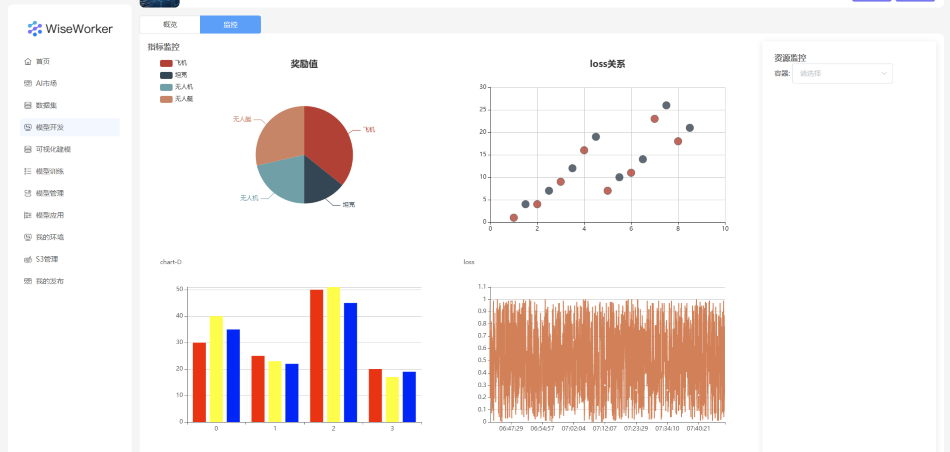

指标监控
指标监控用于将模型开发、模型训练、模型应用中采集指标数据，并且通过可视化的方式展示到平台页面上。

代码中引入SDK
import wise_sdk_client import WiseClient
client = WiseClient()
折线图
在循环中插入log_metric即可
client.log_metric("loss", loss)
```
### 饼状图
```
data = [5, 2, 3, 4]
labels = ['猫', '狗', '汽车', '自行车']
plt = client.import_plt()
plt.pie(x=data, labels=labels, radius=1.5)
plt.legend(labels, loc="upper left", bbox_to_anchor=(1.2, 0, 0.5, 1))
plt.title("类被占比%")
plt.show(run_id=15, key='chart-P')
plt.clf()
柱状图
``` plt = client.import_plt() plt.bar(X, data[0], color='red', width=0.25, label='坦克') plt.bar(X + 0.25, data[1], color='yellow', width=0.25, label='飞机') plt.bar(X + 0.50, data[2], color='blue', width=0.25, label='军舰') plt.xticks(X + 0.25, labels) plt.xlabel("step") plt.ylabel("战损") plt.title("战损柱状图") plt.legend() plt.show(run_id=12, key='chart-D') plt.clf()
### 散点图
```
plt = client.import_plt()
x1 = np.array([1, 2, 3, 4, 5, 6, 7, 8])
x2 = np.array([1.5, 2.5, 3.5, 4.5, 5.5, 6.5, 7.5, 8.5])
y = np.array([1, 4, 9, 16, 7, 11, 23, 18])
z = np.array([4, 7, 12, 19, 10, 14, 26, 21])
plt.scatter(x1, y, s=100, c='red', marker='*', alpha=0.7)
plt.scatter(x2, z, s=100, c='blue', alpha=0.8)
plt.xlabel('step')
plt.ylabel('value')
plt.title("loss关系")
plt.legend(['target', 'actor'], loc="upper left")
plt.show(run_id= 165, key='chart-S')